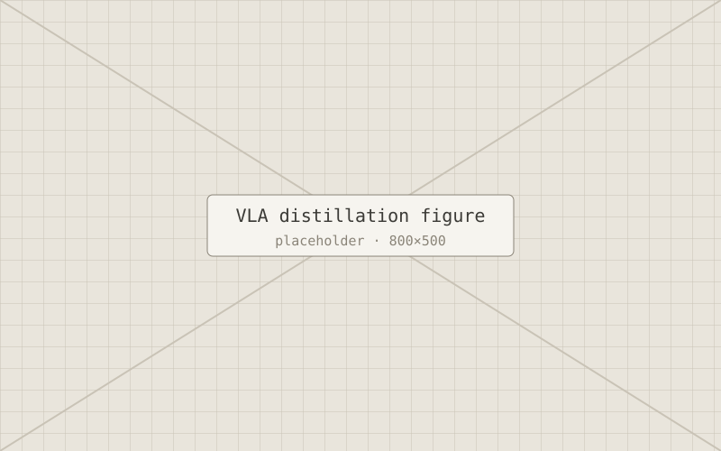

M.Sc. thesis · in progress
VLA-Distillation: robots that keep their words at edge scale
My thesis argues that a compact vision–language–action model can speak and act coherently at edge scale when it is distilled from a large language-native planner. The argument is about where the representation boundary sits, not about scale.
- TeacherA fine-tuned mid-sized VLM outputs actions as JSON, keeping it close to human-readable language so it preserves its language ability while giving accurate actions.
- EncodeThe JSON action blocks are encoded into compact action tokens.
- StudentA custom edge-scale architecture is distilled from the teacher, so one model can both speak and act on local hardware.